00读前一分钟 · 全文脉络（做完题再看也行）
📌 文体：报纸社论——⑤❶ 的 we would call on 是编辑部口吻。和同卷 T2（新闻稿）、T3（特稿）都不一样：本篇作者立场鲜明，所以出了态度题（38）和观点题（40），这两种题在 T2/T3 根本出不了。
📌 结构：问题—分析—对策：价值（①）→ 威胁（②）→ 为什么州法补不上（③）→ 为什么离不开 EPA（④）→ 呼吁（⑤）。五段五题，一段一题，严格顺序。
📌 本篇最值钱的一条规律：社论里作者会先摆出别人的看法再推翻——③❶ the good news（马里兰有州法）→ ❷ But that’s a very shortsighted view；④❶ 把裁决看成维护地主权利 → too easy, and misleading。被推翻的那一半，就是干扰项的原料库：38C/D 取③❶，40A 取④❶。做观点题时先问一句：这句话是作者说的，还是作者在驳的？
01原文精读
🟡 黄色高亮 = 重难点词/短语，点击右侧出卡片 ｜ 蓝色虚线 = 长难句，点击跳到精析 ｜ 每段「意」= 段落意译 ｜ 选中任意其他单词浮出「查有道」 ｜ 原文由你的浏览器从原卷识别成文字（首次约 3 秒，之后秒开）；「原卷对照」可逐句看扫描原图、改识别错字
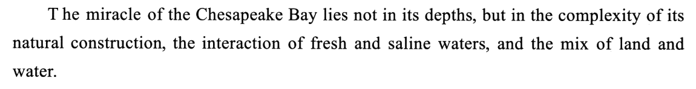
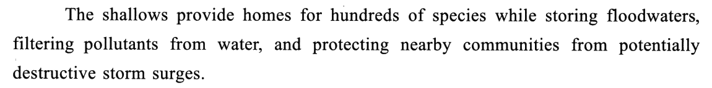
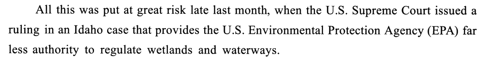
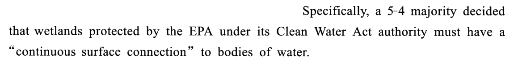
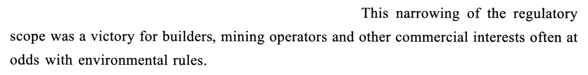
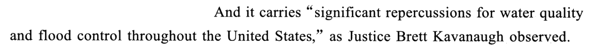
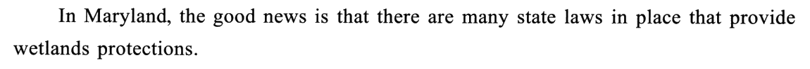
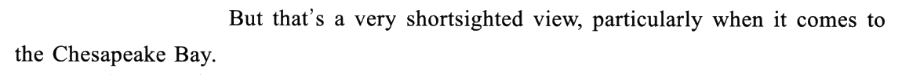
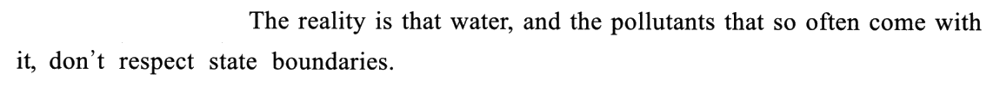
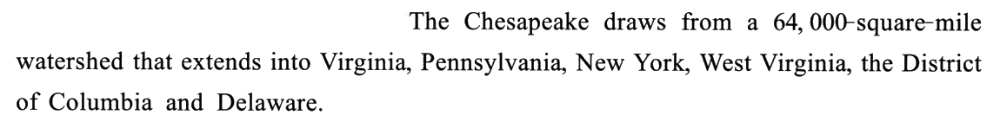
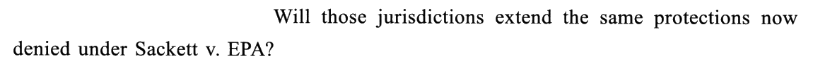
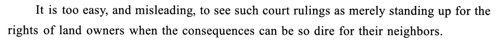
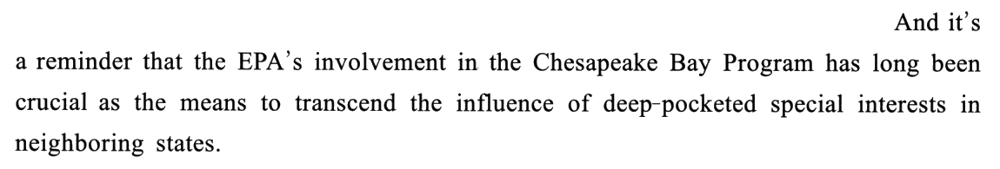
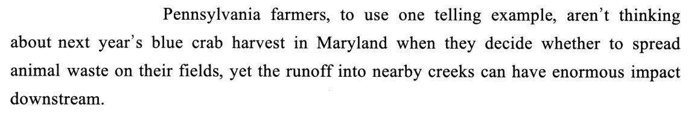
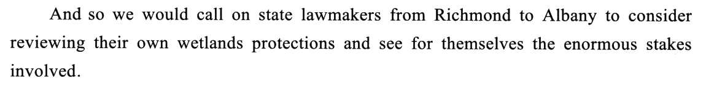
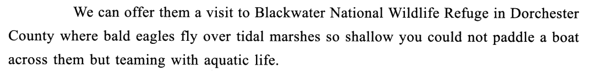
02题目与解析（点选项即判 · 再看解析）
细节综合36. The Chesapeake Bay is described in Paragraph 1 as
干扰项：B 拿❶ 的 complexity 做文章——原文说的是构造复杂，不是看法有争议；②段的裁决才有争议，那是②段的事。C 东拼西凑：❷ 的 potentially 修饰的是「风暴潮可能具破坏性」，②❸ 的 commercial interests 是裁决的受益者——两处都和海湾「有商业潜力」无关。D 把方向弄反：浅滩是保护附近社区免受风暴潮，不是社区的麻烦；nearby communities 原词复现，正是陷阱。
要害：引子段的细节综合题，先看语义色彩：①段全是褒义词（miracle、provide homes、protecting），带贬义的 B、D 先出局；再想引子为什么这么写——是为后文「湿地必须保护」铺垫价值，所以落在「宝贵的自然环境」，不会落在「商业潜力」。
事实细节37. The U.S. Supreme Court’s ruling in the Idaho case
干扰项：A 方向反：管得更少了，怎么会是「加强水污染管控」？②❹ 还说它对水质和防洪有 significant repercussions（重大的不良影响）。C 拿②❸ 的 at odds with 编故事：原文说的是商业利益集团常和环保规定作对，不是居民之间有冲突，更没说裁决能结束冲突——主体也被偷换成了 local residents。D 正好反了：②❸ 说裁决是 a victory for builders, mining operators——矿业经营者是赢家，只会支持，不会反对。
要害：定位处是几个长句、信息很密，从选项反查更快：抓每个选项的关键事物（water pollution / EPA / local residents / mining operators），回原文看原文怎么说它，A 和段意相反、C 和 D 张冠李戴，剩 B。
作者态度38. How does the author feel about the future of the Chesapeake Bay?
干扰项：B 是对❻❼ 的 Perhaps、seems 望文生义——这两个词表达的是可能性低，作者的判断其实很清楚（unlikely），不是「看不懂、拿不准」。C、D 都从❶ 的 the good news 取料，可那是作者马上用❷ But 推翻的看法；而且❶ 说的是马里兰现在有州法，题问的是海湾的未来，时态也对不上。C 还可能被❻ Perhaps some 带偏——作者强调的是「只有一部分辖区愿意没用，得全部」。
要害：态度题先找作者亲口给出的评价词（shortsighted、unlikely、put at great risk），定正负，排掉 C、D；再分辨 B 这种「语气词 ≠ 态度模糊」的坑。社论的写法是「提出问题 → 表示担忧 → 呼吁行动」，worried 正好是中间那一环。
推理引申39. What can be inferred about the EPA’s involvement in the Chesapeake Bay Program?
干扰项：A 最像，排的时候要细看：transcend the influence 是「越过各州利益集团的影响」，选项改成「恢复各辖区之间的平衡」——原文没说过各辖区之间失衡、更没说 EPA 把平衡恢复了，是把 EPA 的作用说大了、说偏了。B 从④❸ 的 blue crab harvest 和②❸ 的 commercial interests 拼出「渔业彻底改革」，原文没有。C 反了：EPA 的价值恰恰在于它不受各州利益左右、能越过州一级；「尊重州权的榜样」和全文论证方向相反。
要害：推理题的例子（④❸）不好懂时，回到段中的观点句（④❷）和全文主线（③段的「跨州」）去理解例子在证明什么。黄皮书把④❷❸ 读成今昔对比——过去 EPA 管得住，如今裁决之后管不住了——这个「如今」是从②段推出来的，④段字面上只有 has long been，考场上这样串起来理解即可。
作者观点40. The author holds that the state lawmakers should
干扰项：A 从④❶ 取料，可④❶ 是作者在驳一种看法（把裁决仅仅看成维护地主权利）——作者批评的是这种看法太简单，不是叫立法者提防土地所有者；何况②❸ 说受益的是 builders、mining operators 等商业利益集团，和 land owners 也不是一回事。C 抓住⑤❷ 的 Wildlife Refuge 和 so shallow 编出「扩建保护区」：⑤❷ 只是请立法者去参观，好让他们亲眼看到⑤❶ 的 stakes，是动员的手段，不是建议本身。D 从⑤❷ 的 bald eagles 和 aquatic life 编出「濒危物种」——原文没有 endangered，作者建议的重心始终是湿地。
要害：观点题两条路互证：① 找作者的建议句（call on … to …），答案是它的同义概括；② 回扣全文对象——前四段都在讲湿地，末段的呼吁只会落在湿地保护上。A、C、D 都是「原词复现 ＋ 方向跑偏」。
03长难句精析（正文蓝色虚线句）
- 主干：
The miracle … lies not in its depths, but in the complexity of …——lie in（在于）＋ not A but B（不是 A 而是 B）：先否定一个常见想法，再给出真正的答案。 - but in 后面的
the complexity of its natural construction是总说，后面两个逗号隔开的the interaction of fresh and saline waters、the mix of land and water是同位语，具体说明「复杂」在哪——三个名词短语并列，别误读成三件不同的事。 - not … but … 是重心标记：but 后面才是作者要说的。这个「否定—肯定」的套路在阅读里极常见，答案总在 but 那一边。
- 主干：
The shallows provide homes for hundreds of species——the shallows 是名词「浅滩」（shallow 的名词用法，常用复数）。 while storing …, filtering …, and protecting …：while ＋ doing 表同时，三个 -ing 并列，主语都是 the shallows。这里的 while 不是转折，是「一边……一边……」。protecting nearby communities from potentially destructive storm surges：protect A from B 保护 A 免受 B；potentially 修饰 destructive——「可能具有破坏性的」。- 36D 偷的就是最后这一截：原文是「保护社区免受风暴潮」，选项变成「社区的麻烦」。
- 主干：
All this was put at great risk late last month——All this 回指①段说的一切好处；put at risk 使处于危险中。 when the U.S. Supreme Court issued a ruling in an Idaho case：when 引导非限制性定语从句，修饰 late last month（上个月底，那时……）；issue a ruling 作出裁决。that provides the … Agency (EPA) far less authority to …：that 从句修饰 a ruling（不是 case）——是裁决给了 EPA 少得多的权力。provide sb sth 给某人某物；far 修饰比较级 less。- 一句话套两层从句，读的时候按「什么时候 → 谁做了什么 → 这个决定有什么效果」三步拆。37B 的答案就在最后一层。
- 主干：
a 5-4 majority decided that …——a 5-4 majority 指九位大法官里赞成的那五位（多数意见）；decide that 裁定。 - that 宾语从句：主语
wetlands protected by the EPA under its Clean Water Act authority（过去分词短语作后置定语，by 引出保护者、under 引出依据），谓语must have a “continuous surface connection” to bodies of water。 bodies of water：body 在这里是「一片、一大块」——水体（河、湖、海）。熟词僻义。- 开头的
Specifically表示「具体说来」：上一句是概括（权力大减），这一句是细节（新标准是什么）。
- 主干：
This narrowing of the regulatory scope was a victory for …——This narrowing 是名词化回指：把上两句「权力大减、标准收紧」压成一个名词再作主语，这是英文社论的常用衔接手法。 for builders, mining operators and other commercial interests：三者并列，other 说明前两者也属于商业利益集团；interests 复数在这里是「利益集团」，熟词僻义。often at odds with environmental rules：形容词短语作后置定语，修饰前面的三类人——常与环保规定相抵触。at odds with 与……不一致、有矛盾。- 37C 拿 at odds with 编出「居民之间的冲突」，37D 把这里的赢家 mining operators 说成反对者——一句话养了两个干扰项。
- 主干：
The reality is that …——主系表，that 引导表语从句。The reality is that 常用来纠正前面的看法（呼应❷ 的 shortsighted）。 - 表语从句的主语是
water, and the pollutants …，两个逗号把 and the pollutants 隔成插入的并列成分；that so often come with it是定语从句修饰 pollutants，it 指 water。 - 谓语
don’t respect state boundaries：主语是复数（water 和 pollutants 两样），所以用 don’t。respect 在这里是「遵守、顾及」——水和污染物不会在州界停下来。 - 这句是全文论证的支点：问题是跨州的，所以光靠一个州不够——39D 的 coordination 就是从这里长出来的。
- 结构：一般疑问句
Will those jurisdictions extend the same protections …?——extend 在这里不是「延长」，是「给予、提供」（extend help / thanks / protection to sb）。 now denied under Sackett v. EPA：过去分词短语作后置定语修饰 protections——「如今在萨基特诉环保署案之下被否定的那些保护」。v. 是 versus 的缩写，判例名「甲诉乙」。- 接下来❻
Perhaps some, but all?是省略问句（Perhaps some will, but will all?），❼ 自答 unlikely——设问＋自答是社论表达立场的标准动作，38 题的答案就在这一问一答里。
- 主干：
It is too easy, and misleading, to see …——it 是形式主语，真正的主语是后面的不定式 to see such court rulings as …；and misleading 是插入的第二个表语。 see A as B把 A 看作 B：such court rulings看作merely standing up for the rights of land owners（仅仅是在维护土地所有者的权利）。when the consequences can be so dire for their neighbors：when 在这里不是「当……时」，而是「既然、考虑到」——表示让人不该那么看的理由。their 指 land owners。- 这是作者在驳一种看法——40A「提防土地所有者」把被驳的看法当成了作者的建议。
- 主干：
it’s a reminder that …——it 回指上一句说的情况；that 引导同位语从句，说明 reminder 的内容。 - 同位语从句：
the EPA’s involvement in the Chesapeake Bay Program has long been crucial——现在完成时 ＋ long：一直以来都至关重要。 as the means to transcend the influence of …：as 表身份「作为」；means 单复同形，「手段」；transcend 超越、凌驾于；deep-pocketed 口袋深的 ⟹ 财大气粗的；special interests 特殊利益集团。- 39 题就考这一句的引申：EPA 是各州之上的力量 ⟹ 能统筹各州 ⟹ D coordination。A 的 restored the balance 把 transcend 读偏了。
- 主干：
Pennsylvania farmers … aren’t thinking about next year’s blue crab harvest in Maryland＋yet the runoff … can have enormous impact downstream——yet 连接两个分句，表转折。 to use one telling example：插入语，「举一个很能说明问题的例子」。telling 是形容词「有说服力的、说明问题的」，熟词僻义。when they decide whether to spread animal waste on their fields：时间状语从句；whether to do 是否做；animal waste 动物粪便（作肥料）。the runoff into nearby creeks：runoff 径流（从地面流进河里的水，带着粪肥里的营养物质）；downstream 副词「在下游」。上游一个州的农民、下游另一个州的蓝蟹——这个例子就是③❸「水不认州界」的具体版。
- 主干：
we would call on state lawmakers … to consider …——call on sb to do 呼吁某人做某事；would 让语气更委婉。 from Richmond to Albany：从弗吉尼亚州府到纽约州府——用两个州府指代流域内所有州，修饰 state lawmakers。- 不定式里两个并列动作：
consider reviewing their own wetlands protections（consider doing 考虑做某事）和see for themselves the enormous stakes involved——see 的宾语 the enormous stakes involved 被挪到了 for themselves 之后（宾语较长，后置）。 stakes在这里是「利害关系、风险」（the stakes are high 事关重大），involved后置作定语「其中涉及的」。40B 就是这一句的概括。
- 主干：
We can offer them a visit to …（黑水国家野生动物保护区）——offer sb sth 给某人提供某物。 where bald eagles fly over tidal marshes：where 引导定语从句修饰 Refuge（在那里……）。- 两个形容词性成分并列修饰 marshes——
so shallow (that) you could not paddle …（so … that 结构省略了 that，浅到划不过船）和teaming with aquatic life（满是水生生物），由 but 连接：浅，却生机勃勃。 - ⚠️ 拼写：卷面印的是 teaming，标准写法是 teeming（be teeming with 充满）；team 是「组队」，意思对不上。考场上按 teeming 理解即可。
04词汇复盘（点卡片看详情）
05可搬进作文/翻译的素材
本篇话题——生态保护、个人利益与公共利益、局部与整体、政府监管——正对大作文里的「环境保护」「合作共赢」「眼前与长远」类题目，也能给小作文写「倡议书」「给有关部门的建议信」垫素材；社论的「问题—分析—呼吁」三步本身就是一篇议论文的骨架。英文例句都是按原文句式自拟的，只借骨架。